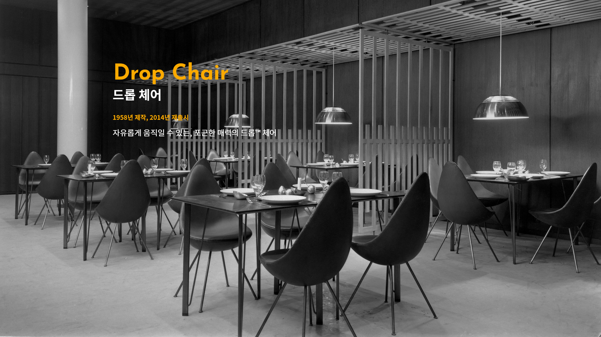
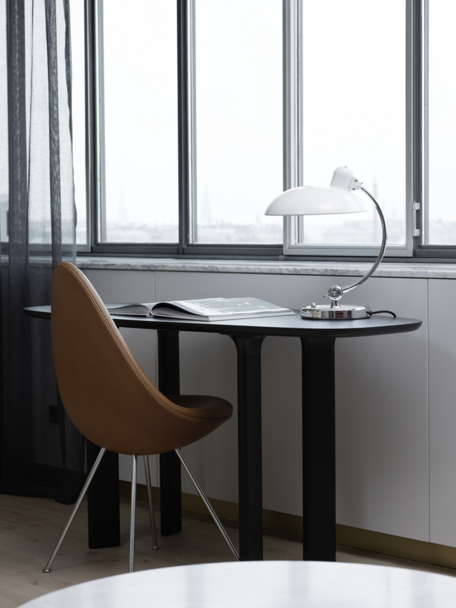
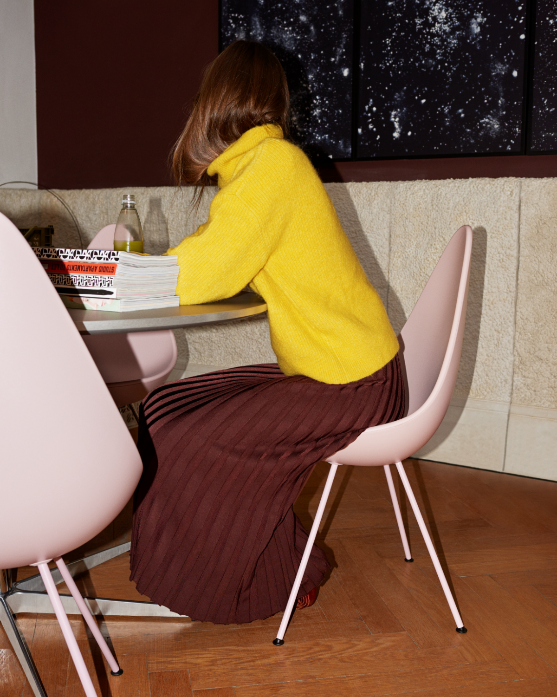
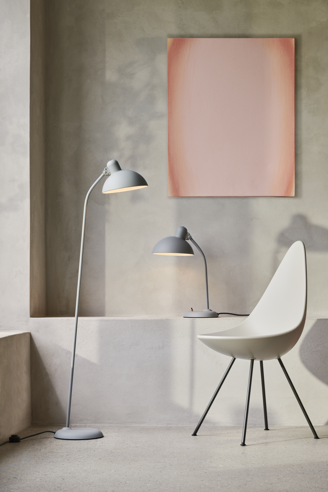

아르네 야콥센이 디자인한 프리츠 한센의 Drop™ 체어가 현대적인 컬러와 파우더 코팅 베이스 마감 방식으로 새롭게 업그레이드 되었다. 카를라 소차니와 프리츠 한센의 콜라보레이션으로 선정된 새로운 컬러는 프리츠 한센의 스태킹 체어 시리즈와 잘 어울리는 컬러들로 구성되어 있다.
fritz hansen web site
editor: fritz hansen
photo: House of FRITZ HANSEN
editor: fritz hansen
photo: House of FRITZ HANSEN

작품 속에 사랑을 녹여내다
‘드롭 체어’는 아르네 야콥센의 ‘총체적 예술’이 실현된 결과물인 코펜하겐 SAS 로열 호텔을 위해 1958년 만들어졌다. 그가 개인적으로 제일 좋아하는 의자 중 하나였던 ‘드롭 체어’는 아내의 아름다운 어깨선에서 영감을 받아 감각적인 곡선을 뽐낸다. 지난 2014년 프리츠 한센에서 재생산을 시작한 ‘드롭 체어’는 단순하고 간결한 형태 덕분에 작은 아파트와 스튜디오, 바와 레스토랑 등에서 큰 호응을 모으고 있다.
brique magazine
editor: 전종현
photo: fritz hansen
editor: 전종현
photo: fritz hansen


편안하고 자유로운 유기적 디자인
드롭 체어는 큰 개성을 가진 작은 의자이다. 후면의 디자인은 따뜻한 포옹과 움직임의 자유가 결합되어 놀라운 수준의 편안함을 선사한다. 새로운 디자인처럼 신선하고 활기차지만 희귀한 유산을 가진 드롭 체어는 단순함이 시사하는 것보다 훨씬 더 큰 틀림없는 개성을 가지고 있다. 디테일에 대한 관심과 독특한 디자인은 50년 전과 마찬가지로 오늘날 드롭 체어를 의미있게 만드는 대담한 설명을 제공한다. 그 의자는 단지 존재감과 아름다움으로 방 전체를 높일 수 있는 가구 디자인의 훌륭한 예로서 다양한 환경에 우아하게 혼합될 것이다.
Danish Design Store
editor: danish design store
photo: fritz hansen
editor: danish design store
photo: fritz hansen